keywords Mediation, conditional mediation, moderated mediation, mediated moderation
Draft version, mistakes may be around
This example shows how to estimate a conditional (moderated) mediation model with four variables in jAMM. Data come from Muller, Judd, Yzerbyt, 2005 and contain variables related to a social dilemma experiment. The dataset can be downloaded here
Participants were primed with either “might” or “morality” primes and then engaged in a one-trial prisoner’s dilemma with a fictitious partner. Additionally, participants’ social value orientation (from pro-self and pro-social) was measured. Social value orientation is a stable trait, which differentiates people in their tendency to cooperate. Because cooperative behavior is known to be linked to expectations about the other cooperation, participants were asked to report their expectations about other’s cooperation. The aim of the study is to show whether prime has an effect on cooperation, if social value orientation moderates the effect of prime, and if expectations have a mediating role in the experimental effects.
There are four variables:
prime: a two-group experimental conditionEXP: expectations about the other cooperationSVO: continuous measure of social value orientation (higher levels mean more cooperative attitude)BEH: behavior, the amount of experimental tokens given to the public good by the participant.The mediation model implied by the researcher’s hypotheses is: PRIME -> EXP -> BEH. Additionally, the researcher expects SVO to moderate the mediation model, such that the mediation effect through EXP should be different at different levels of SVO. Thus, SVO is the moderator of the mediation model. At this stage, we do not know whether SVO moderates the path PRIME -> EXP or the path EXP - BEH, so we simply estimate SVO moderation effect on both paths. This implies that SVO should be allowed to interact with PRIME in predicting EXP, and to interact with EXP is predicting BEH. Basically, SVO*PRIME interaction should be present in both the mediator model (the one with EXP as dependent variable) and in the full model (the one with BEH as dependent variable)
We first define the variables role in order to obtain the simple mediation model PRIME -> EXP -> BEH. In jAMM, we put each variable in the corresponding field.
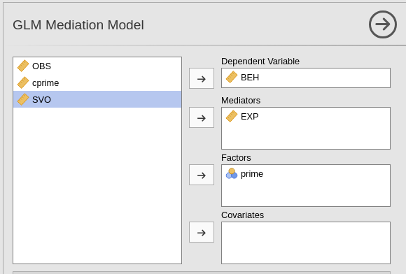
Notice that we put PRIME in the Factors field because the variable is categorical. However, being the variable a dichotomous variable, putting it in the Covariates would yield similar results. By putting it in the Factors field makes the variable to be coded as a categorical variable, as signaled by the Model diagram notes table.
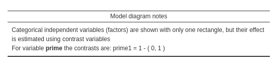
The resulting path diagram is the classical simple mediation diagram.
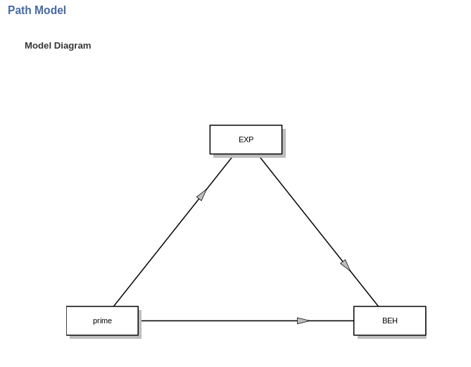
The module automatically estimates the simple model parameters, but we can ignore the results.
To add SVO as moderator, we first need to define it as an independent variable. Being SVO a continuous variable, we put it in Covariates.
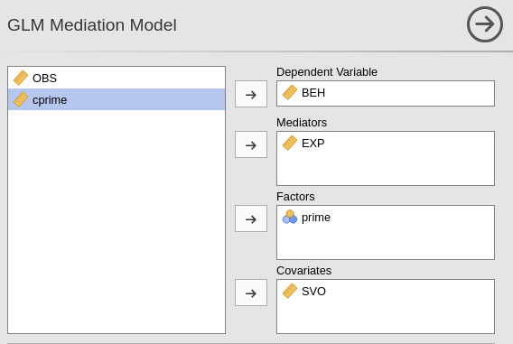
Notice that jAMM automatically updates the diagram, but we still need to declare that SVO is not only an additional independent variable, it should function as a moderator. To do that, we go to Moderators tab, and put SVO in the moderator field.
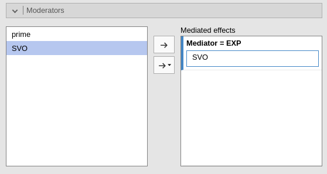
Now the model is set-up, and the diagram shows the intended model.
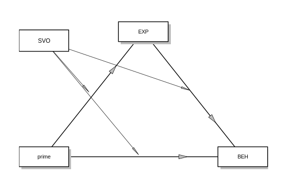
For simplicity, the diagram does not show the moderator main effects (cf. the Model diagram notes in your output), but they are correctly inserted in the model. You can check out the model in the Mediators models and Full model tabs.
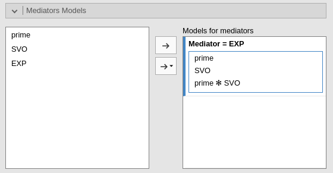
The Mediators models tab shows that in predicting EXP (i.e Mediator=EXP), we defined PRIME, SVO, and their interaction as predictors.
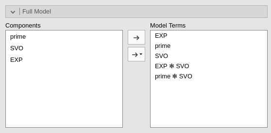
The Full model tab shows that in predicting BEH (i.e the dependent variable), we defined PRIME, EXP and SVO, as predictors, and the two-way interaction between the moderator and the other variables in the model. This guarantees the model to be completed.
In conditional mediation models, the first thing we want to check is whether the moderator actually has a moderating effect on the components of the mediated effect. We can check that in the results table Moderation effects (interactions).
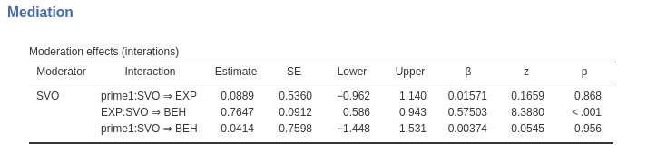
In the table we see that SVO does not moderate the path from PRIME to EXP (at least not in a substantial way), because the interaction between PRIME and SVO in predicting EXP is not significant. However, SVO moderates the path from EXP to BEH, because the interaction between EXP and SVO in predicting BEH is clearly different from zero. This means that the conditional mediation is due to the fact that when EXP affects BEH, its effect depends on SVO. This model is sometimes called moderated mediation, because the interaction comes after the mediator in the mediation pathway.
After finding a significant interaction, we know that the mediated effect depends on the levels of the moderator. Thus, we should see how the mediated effects look when estimated at different levels of the moderators. We can call these simple mediated effects.
Simple mediated effects are in the Conditional Mediation results section. The results show the mediatated (indirect), direct, and total effects at different levels of the moderators. By default, the levels of the moderators are SVO=mean-SD, SVO=mean, and SVO=mean+SD. The levels of the moderator used to computed the conditional mediation parameters can be changed in the Covariates Scaling tab.
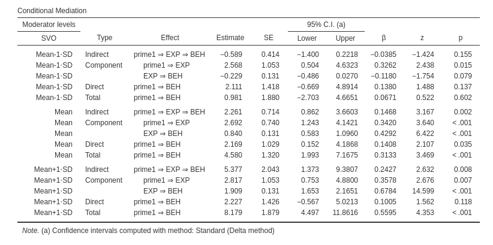
Let’s start by inspecting the results for SVO=Mean, that show the average mediated effect.
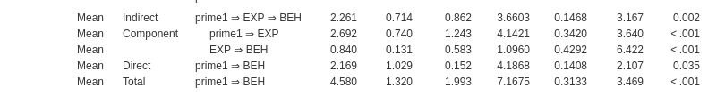
The Indirect row reports the mediated effect. Thus, this is the classical \(a \cdot b\) mediation effect, where \(a\) is the coefficient from PRIME to EXP and \(b\) is the coefficient from EXP to BEH, computed for the average level of SVO. In other words, this is the average mediated effect across levels of the moderator. The Coefficients \(a\) and \(b\) are the components of the mediated effect, and you can see them in the table in the Component rows. As expected, \(a \cdot b= 2.692 \cdot .840 = 2.261\).
The z test associated with the mediated effect is the large sample z test of the mediated effect, which is a slightly more accurate version of the Sobel test. The confidence intervals are also computed using large sample approximation, but the bootstrap version of confidence intervals can be asked in the Mediation options tab (see below).
The Direct row shows the effect of the independent variable not mediated by EXP computed for the average level of SVO. The coefficient is usually denoted by \(c^\prime\) in the mediation jargon. The Total effect is the overall effect of prime on BEH, that is \(c=a \cdot b + c^\prime\), again computed for the average level of SVO. All the z tests associated with these coefficients test the null-hypothesis that the corresponding coefficient is zero. Confidence intervals are computed with the same method used for the indirect effect.
The \(\beta\) column shows the standardized solution coefficients.
As regards the confidence intervals, by default jAMM computes the confidence intervals using the large sample delta method, that is using the z test as the starting point of computation. However, often users prefer to use a bootstrap method. That can be done in the Mediation options tab. Details of the methods can be found in the lavaan R package.
Thus, we can say that for the average level of SVO (mildly cooperative people), expectations mediate the effect of prime on behavior, IE=2.261, CI=[.862,3.66],beta=.147, z=3.17, p.=.002.
We can now explore what happens for low levels of cooperative attitude (SVO=mean-SD).
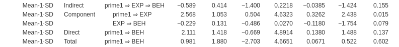
The mediated effect is much smaller than before, IE=-.589, CI=[-1.400,.2218], beta=-.0385, z=-1.424, p.=.155, and does not seem to be different from zero. Indeed, also the total effect of PRIME is small (.982). This means that for low levels of SVO, prime has a weak effect on behavior, and this small effect is not mediated by expectations.
Finally, we can explore what happens for high levels of cooperative attitude (SVO=mean+SD).
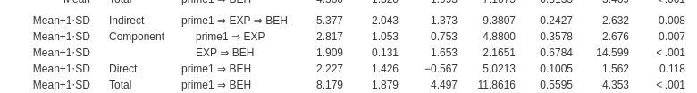
The mediated effect is larger than for the average SVO, IE=5.38, CI=[1.373, 9.38], beta=.242, z=2.63, p.=.008, and seems to be different from zero. The total effect of PRIME is also larger (8.18). Thus, for high levels of SVO, prime has a strong effect on behavior, and this effect is partially due to the mediated effect of expectations.
If you prefer to have a shorter table of conditional mediation effects, you can ask to hide the components of the mediated effects in the Mediation options tab. That produces a simpler table.
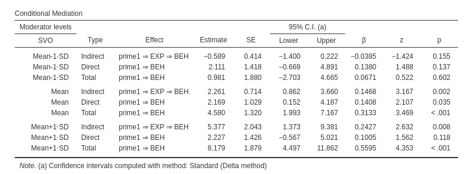
If you are interested in checking the convergence of jAMM results with other software results, please visit the rosetta store Rosetta store: conditional mediation
Got comments, issues or spotted a bug? Please open an issue on GAMLj at github“ or send me an email